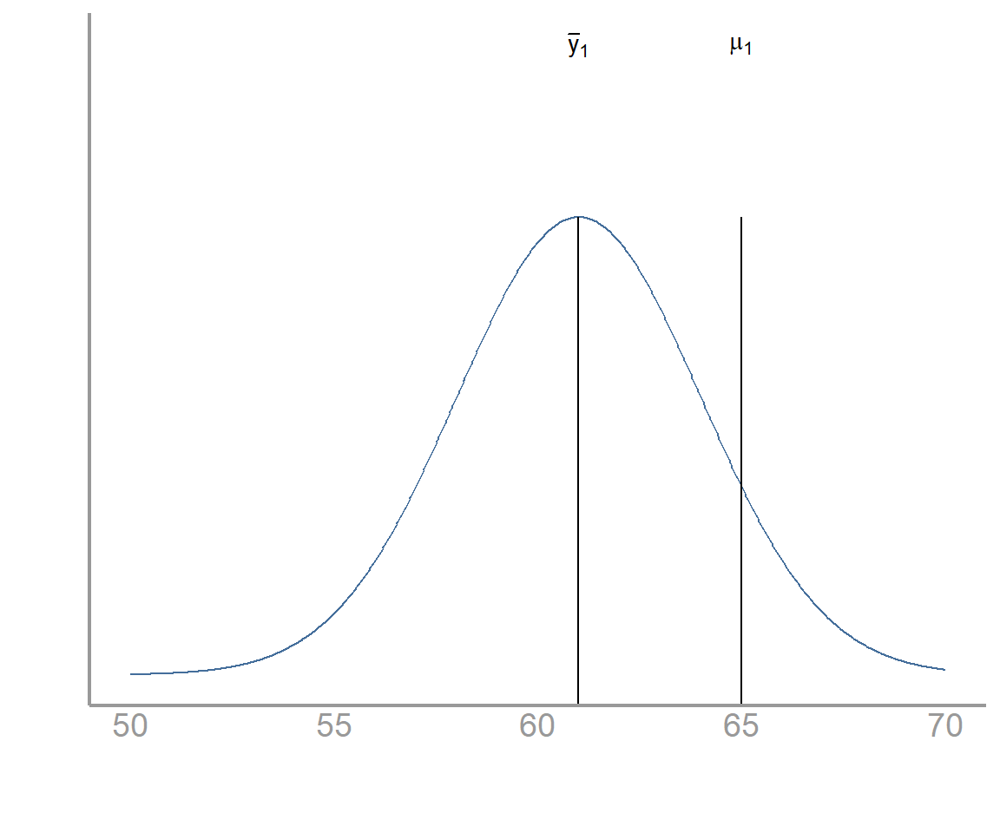
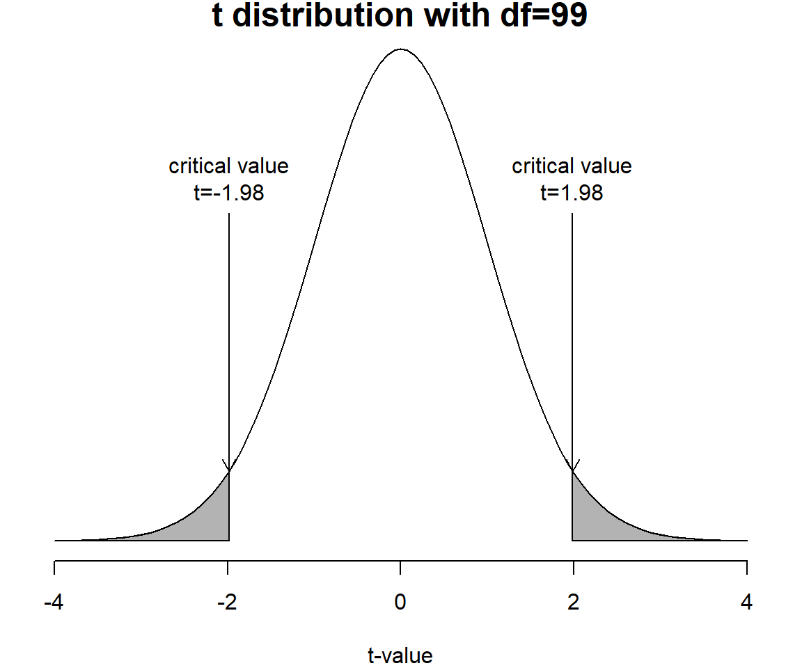
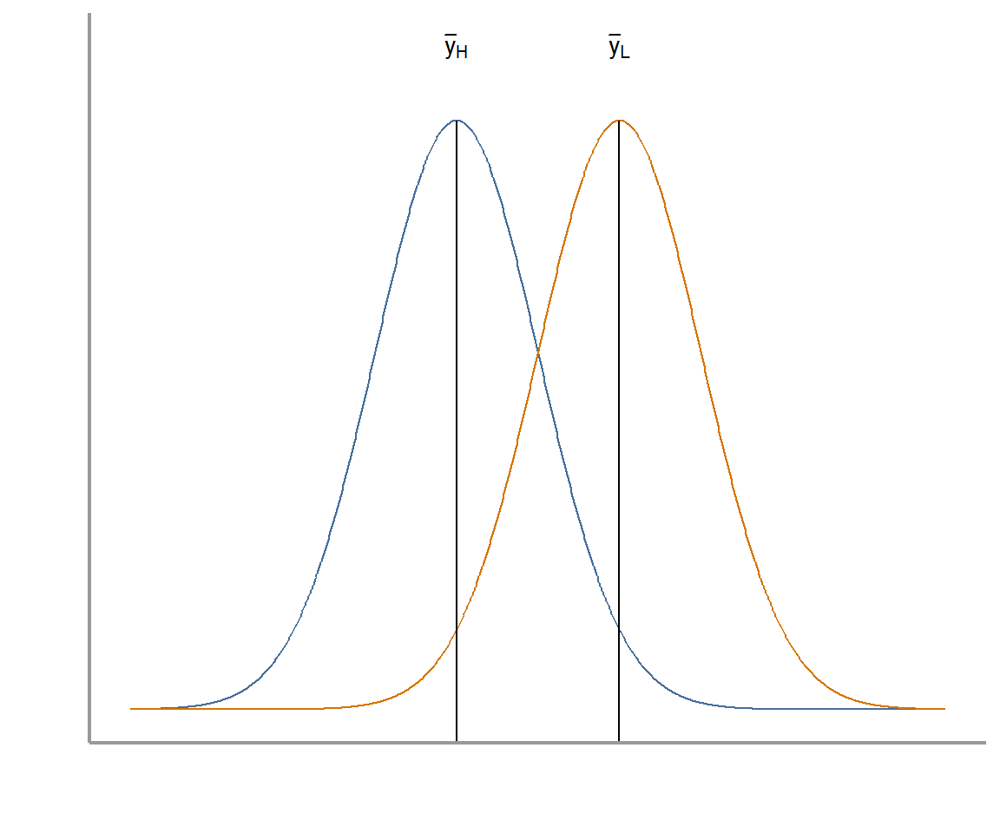
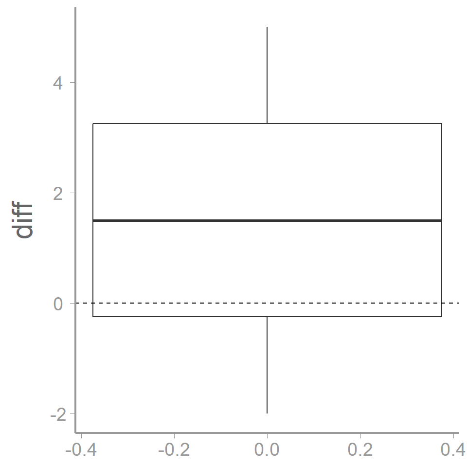

Lab 4: Linear models with one categorical predictor– t-tests
FANR 6750: Experimental Methods in Forestry and Natural Resources Research
Fall 2026
Lab 3
Graphics
Sampling error
Confidence intervals
Today’s topics
Introduction
Linear models with one categorical predictor: t-tests
One sample
Samples vs tails
Two sample
Paired
Introduction
Today we will discuss a range of scenarios which broadly fall under the category of t-tests. These will include:
when a sample mean is being compared to a particular value (one-sample t-test)
when two sample means are being compared to each other and the observations between samples are independent (two-sample t-test)
when two sample means are being compared to each other and the observations between samples are paired (paired t-test)
Scenario 1: One sample t-tests
First, we will talk about the scenario in which we only have one sample of data and we are interested in its mean.
Question: Is the average height of students at UGA equal to 65 inches?
Problem: We don’t know the true population mean (\(\mu_1\)). All we have is the sample mean (\(\bar{y}_1\)).
The relevant hypotheses are:
\(H_0 : \mu_1 = 65\)
\(H_A : \mu_1 \neq 65\)
Suppose we have collected a random sample of 100 students. Below is a plot of the distribution of their heights. In this case the sample mean is 61 inches. From the plot below, it would be difficult to conclude one way or another whether the population mean is equal to 65.
We can think about this problem in a few different ways. Below we will see how to approach it both from the perspective of a linear model as well as from the perspective of a test. Remember that in our linear model below we are interested in estimating \(\beta_0\) which in this very simple case just represents the population mean.
\[ y_i = \beta_0 + \epsilon_i \ \ \ \ \ \text{where} \ \ \ \ \ \epsilon_i \sim \text{N}(0,\sigma) \]
Key points
If the sample mean (\(\bar{y}_1\)) is very different from the proposed population mean and the standard error of the difference is small, the \(t\)-statistic will be far from zero
If the \(t\)-statistic is more extreme than the critical values, we reject the null hypothesis (\(H_0\))

Exercise 1
Formulation as a linear model
Open your
FANR6750RStudio project (if you have one)Create a new
Rscript and save it to the directory where you store you lab activities. Name it something likelab04-t_tests.RLoad the
FANR6750package and thestudentsdataobject
library(FANR6750)
data("studentsdata")- Create an object
studentswhich is the vector in thestudentsdatadataframe.
students <- studentsdata$students- Fit a linear model to this dataset.
mod1 <- lm(students - 65 ~ 1)
summary(mod1)
#>
#> Call:
#> lm(formula = students - 65 ~ 1)
#>
#> Residuals:
#> Min 1Q Median 3Q Max
#> -10.406 -2.181 -0.156 1.819 7.794
#>
#> Coefficients:
#> Estimate Std. Error t value Pr(>|t|)
#> (Intercept) -3.594 0.321 -11.2 <2e-16 ***
#> ---
#> Signif. codes: 0 '***' 0.001 '**' 0.01 '*' 0.05 '.' 0.1 ' ' 1
#>
#> Residual standard error: 3.21 on 99 degrees of freedomA few things to think about here:
Why did we include the
- 65in the model statement?What does the
~ 1represent?What does the intercept value mean?
What do we conclude from this model and p-value?
Formulation as a t-test by hand
Now that we have seen how R can create a linear model to help us answer the question about the population mean, we will dive deeper into what exactly the computer is doing. How exactly did it decide to reject the null hypothesis? How did it calculate the p-value? Where did it get those numbers?
We know from lecture that the formula to get a test statistic for a one sample test is the following:
\[ t = \frac{\bar{y} - \mu_0}{SEM} \ \ \ \ \ \text{where} \ \ \ \ \ SEM = \frac{s}{\sqrt{n}} = \frac{\sqrt{\frac{1}{n-1}\sum^n_{i=1}(y_i - \bar{y})^2}}{\sqrt{n}} \] While this looks like a lot, we can break it into pieces as lines of code in R.
- Create an object which is the sample mean.
y_bar <- mean(students)- Create an object which is the standard error
se_y <- sd(students)/sqrt(length(students))- Put these together to calculate the test statistic
t_stat <- (y_bar - 65)/se_yNow that we have a test statistic, we need to calculate a critical value for comparison.
- Calculate the critical values
alpha <- 0.05
t_crit <- qt(c(alpha/2, 1-alpha/2), df= length(students)-1)Notice that the results are the same as when we used the lm() function.
Formulation as a t-test using the built in R function
- Use the built in
Rfunctiont.test().
t.test(students, mu= 65, alternative= 'two.sided', conf.level= 0.95)
#>
#> One Sample t-test
#>
#> data: students
#> t = -11, df = 99, p-value <2e-16
#> alternative hypothesis: true mean is not equal to 65
#> 95 percent confidence interval:
#> 60.77 62.04
#> sample estimates:
#> mean of x
#> 61.41Samples vs Tails
Before we go any further, lets address an issue that many students find confusing about t-tests. This is the issue of samples vs tails. What does it mean when we talk about a ‘one sample t-test vs a two sample t-test’? What does it mean when we say a t-test had ‘one tail or two tails’?
Samples: The number of samples (one or two) has to do with the data that you are using to approach the research question. If you are comparing one sample to a specific value (e.g. \(\mu_1 = 6\)) we call that a one sample test. If instead, you are comparing two sample means to eachother, we call that a two sample test
Tails: The number of tails (one or two) is related to the specific research question that you are interested in asking and it is directly informed by the null and alternative hypotheses. A two tailed test will have hypotheses like those below:
\[ H_0: \mu_1 = x \]
\[ H_A: \mu_1 \ne x \]
Notice the \(=\) and \(\ne\) in the hypotheses. \(\mu_1\) may be being compared to a specific value or being compared to another mean (e.g. \(\mu_2\)) but the hypotheses are always set up as \(=\) vs \(\ne\).
In constrast, a one tailed test will have hypotheses like these below:
\[ H_0: \mu_1 \le x \]
\[ H_A: \mu_1 > x \]
Or the other way around:
\[ H_0: \mu_1 \ge x \]
\[ H_A: \mu_1 < x \]
Notice that in a one tailed test, the alternative is only interested in one direction and the null includes everything else.
In what types of situations might you want to set up a t-test as one tailed? What about two tailed? Which do you think has more statistical power to detect an effect?
Scenario 2: Two sample t-tests
In this dataset, we have the average number of calls over 10 minutes during point count surveys for Song Thrushes (Turdus philomelos), a species of song bird in eastern Europe. The researcher is interested in understanding how wind may be affecting the frequency of bird calls. Specifically, she would like to know whether high wind conditions results in fewer average calls over 10 minutes than low wind conditions.
Question: Do the samples come from the same population, or do they come from populations with different means?
Problem: We don’t know the true population means (\(\mu_H\), \(\mu_L\))
Under the assumption that the variances of the two populations are equal, the relevant hypotheses are:
\(H_0 : \mu_H \ge \mu_L\)
\(H_A : \mu_H < \mu_L\)
How many tails are in this test? Why did we decide to do that?

We will again see how this problem can be approached from the perspective of a linear model as well as being considered as a test. Below is the linear model for the two sample t-test. It should look similar to the last one we used, but now we have added the complexity of two categorical levels (i.e. high wind vs low wind):
\[ y_i = \beta_0 + \beta_1x_i + \epsilon_i \ \ \ \ \ \text{where} \ \ \ \ \ \epsilon_i \sim \text{N}(0,\sigma) \]
How do we interpret \(\beta_0\) and \(\beta_1\)?
Exercise 2
Formulation as a linear model
- Load the
FANR6750package and thethrushdataobject. Lets look at the structure and summary of the dataset as well
library(FANR6750)
data("thrushdata")str(thrushdata)
#> 'data.frame': 100 obs. of 2 variables:
#> $ calls: num 9.1 5.7 7.7 14.9 12.3 16.7 17.8 11.6 7.5 14.3 ...
#> $ wind : chr "high" "high" "high" "high" ...
summary(thrushdata)
#> calls wind
#> Min. : 5.7 Length:100
#> 1st Qu.:11.3 Class :character
#> Median :14.1 Mode :character
#> Mean :14.1
#> 3rd Qu.:16.7
#> Max. :23.4
# Notice from the str() and summary() functions that R is interpreting the 'wind' variable
# as a character. Because we would like to treat 'wind' as a grouping variable, we can
# convert it to a factor in R.
thrushdata$wind <- as.factor(thrushdata$wind)- Fit a linear model to the data which estimates call frequency as a function of wind conditions.
mod2 <- lm(calls~ wind, data= thrushdata)
summary(mod2)
#>
#> Call:
#> lm(formula = calls ~ wind, data = thrushdata)
#>
#> Residuals:
#> Min 1Q Median 3Q Max
#> -6.02 -2.42 -0.12 2.17 6.95
#>
#> Coefficients:
#> Estimate Std. Error t value Pr(>|t|)
#> (Intercept) 11.720 0.414 28.32 < 2e-16 ***
#> windlow 4.730 0.585 8.08 1.7e-12 ***
#> ---
#> Signif. codes: 0 '***' 0.001 '**' 0.01 '*' 0.05 '.' 0.1 ' ' 1
#>
#> Residual standard error: 2.93 on 98 degrees of freedom
#> Multiple R-squared: 0.4, Adjusted R-squared: 0.394
#> F-statistic: 65.3 on 1 and 98 DF, p-value: 1.69e-12How would you interpret these results? Is there a difference in call frequency as a function of wind conditions? Which of these numbers represent \(\beta_0\) and \(\beta_1\) in our linear model above?
Formulation as a t-test by hand
Similar to Exercise 1, we could calculate a test statistic by hand. The formulas for creating this test statistic as well as the pooled variance are shown below:
\[\large t = \frac{(\bar{y}_H − \bar{y}_L) − (\mu_H − \mu_L)}{\sqrt{s^2_p/n_H + s^2_p/n_L}}\]
where \(s^2_p\) is the pooled variance
\[\large s^2_p = \frac{(n_H − 1)s^2_H + (n_L − 1)s^2_L}{n_H + n_L − 2}\]
We will leave it as an exercise for you to perform. The general steps are as follows:
Calculate the test statistic by defining all the necessary terms in R
Calculate the appropriate critical value/values
Compare the test statistic to the critical value/values and reach a conclusion about the hypotheses in question
Formulation as a t-test using the built in R function
- Create two objects which represent the calls vectors for high and low wind conditions
yL <- thrushdata$calls[thrushdata$wind== 'low']
yH <- thrushdata$calls[thrushdata$wind== 'high']- Use the
t.test()function to perform the two sample t-test
t.test(yH, yL, var.equal = TRUE, paired = FALSE, alternative = "less")
#>
#> Two Sample t-test
#>
#> data: yH and yL
#> t = -8.1, df = 98, p-value = 8e-13
#> alternative hypothesis: true difference in means is less than 0
#> 95 percent confidence interval:
#> -Inf -3.758
#> sample estimates:
#> mean of x mean of y
#> 11.72 16.45Make sure you set var.equal=TRUE. Otherwise, R will assume that the variances of the two populations are unequal. We can test this assumption using the code below.
var.test(yH, yL)
#>
#> F test to compare two variances
#>
#> data: yH and yL
#> F = 1.2, num df = 49, denom df = 49, p-value = 0.5
#> alternative hypothesis: true ratio of variances is not equal to 1
#> 95 percent confidence interval:
#> 0.6874 2.1345
#> sample estimates:
#> ratio of variances
#> 1.211What do we conclude? Was it appropriate for us to assume equality of variances? What could we have done if this assumption was not met?
We have performed the t-test for this dataset but it would be nice if we could plot the data. This section below provides a brief introduction to plotting in R.
Scenario 3: Paired t-test
In this dataset, the researcher is interested in studying the effects of a pesticide on caterpillar populations. Twelve bushes are examined and the number of caterpillars on each bush is recorded. The pesticide is applied and after 3 days the number of caterpillars on each bush is recorded again.
Question: Does the pesticide have a negative effect on the caterpillar population?
Note: Paired t-tests can be thought of as a one sample t-test on the differences.
The hypotheses for this test would be the following:
\[ H_0: \mu_T \ge \mu_U \]
\[ H_A: \mu_T < \mu_U \]
Another way we could think about this is to say that \(\mu_U - \mu_T = \mu_D\). From here, we can formulate the hypotheses as:
\[ H_0: \mu_D \le 0 \]
\[ H_A: \mu_D > 0 \]
Exercise 4
Formulation as a linear model
In this case, we already know that the paired t-test can be thought of as a one sample t-test on the differences. As a result, the linear model can be set up in the same way as Scenario 1 above. This will be left as an exercise
Formulation as a t-test by hand
This will be left as an exercise for you but the general steps are as follows:
- Load the caterpillar dataset
data("caterpillardata")- Calculate the difference between the untreated and treated values
caterpillardata$diff <- caterpillardata$untreated - caterpillardata$treated
mean(caterpillardata$diff)
#> [1] 1.5Is the mean different from zero?
ggplot(data = caterpillardata, aes(y = diff)) +
geom_boxplot() +
geom_hline(yintercept = 0, linetype = "dashed")
- Calculate the standard deviation of the differences
\[\large s_d = \sqrt{\frac{1}{n-1}\sum_{i=1}^n(y_i - \bar{y})^2}\]
- Calculate the test statistic
\[\large t = \frac{\bar{y}-0}{s_d/\sqrt{n}}\]
- Compare to appropriate critical value and draw a conclusion
Formulation as a t-test using the built in R function
- Use the
t.test()function in R to perform the test
t.test(caterpillardata$diff, mu= 0, alternative= 'greater')
#>
#> One Sample t-test
#>
#> data: caterpillardata$diff
#> t = 2.3, df = 11, p-value = 0.02
#> alternative hypothesis: true mean is greater than 0
#> 95 percent confidence interval:
#> 0.3408 Inf
#> sample estimates:
#> mean of x
#> 1.5Assignment
This dataset comes from fisheries landings data for Yellowfin tuna (Thunnus albacares). The weight in pounds was recorded for each fish as well as presence of the larval form of a Lacistorhynchidae tapeworm (Dasyrhynchus talismani). The researcher believes that the presence of the tapeworm likely results in a less healthy and therefore lighter fish.
Create an R Markdown file titled “Assignment 2”. Within that document, do the following:
- Create an
Rchunk to load the tuna data using:
library(FANR6750)
data("tunadata")Make a figure to show the weights of both infected and healthy tuna. You should spend some time considering what type of figure would best display this data
Create a header called “Hypotheses” and under this header, in plain English indicate what the null and alternative hypotheses are for the t-test. Also use R Markdown’s equation features to write these hypotheses using mathematical notation. In order to do this, you will need to consider what type of test would be appropriate for this data and how many tails the test will have
Create a header called “t-test by hand”. Under this header, add a R chunk that includes the following code. Change the
?inside theset.seed()function to any number of your choosing, then run the code. you should get either a 0 or a 1
set.seed(?)
rbinom(1, 1, 0.5)- If the code above returned 0, do the following:
Do a t-test on the tuna data without using the
t.test()function. Use only the functionsmean,sd, and possiblylength. Be sure to annotate your code (either within theRchunk using#or as plain text within the R Markdown file) and state the decision (reject or fail to reject the null) based on your results
- If the code above returned 1, do the following:
Ask AI to perform a t-test without using the
t.test()function. The code may only use the functionsmean,sd, and possiblylength. The final code must be annotated and must state the decision of the test. Provide all prompts and output you used to get a final, working version of the code that meets the criteria above.
- Regardless of which option you completed, keep track of how long it took you to complete the question and include the time taken at the end of your answer.
Create a header called “t-test in R”. Under this header, do the t-test again, but this time using the
t.testfunction (assume variances are equal). Did you get the same answer as the previous question. Explain why you think the t-test failed to reject the null hypothesis even though the sample means were ~60 pounds different (almost a 20% difference in weight). What about the data may have caused this result?Create a new header called “Reflection”. Under this header, answer the following questions:
On a 1-10 scale, how would you rate your confidence in the topics covered in this lab?
What lingering questions/confusion about these topics do you still have?
If you used AI to answer question 4, do you think it helped? Did it save time? If you did not use AI, do you think it would have helped?
A few things to remember when creating the document:
Be sure to include your name in the
authorfield of the headerBe sure the output type is set to:
output: html_documentBe sure to set
echo = TRUEin allRchunks so that all code and output is visible in the knitted documentRegularly knit the document as you work to check for errors
See the R Markdown reference sheet for help with creating
Rchunks, equations, tables, etc.If you use AI on any part of your assignment, you must include the full prompt(s) you used and it’s full answer(s) in a separate section titled “AI assistance” at the end of this document.